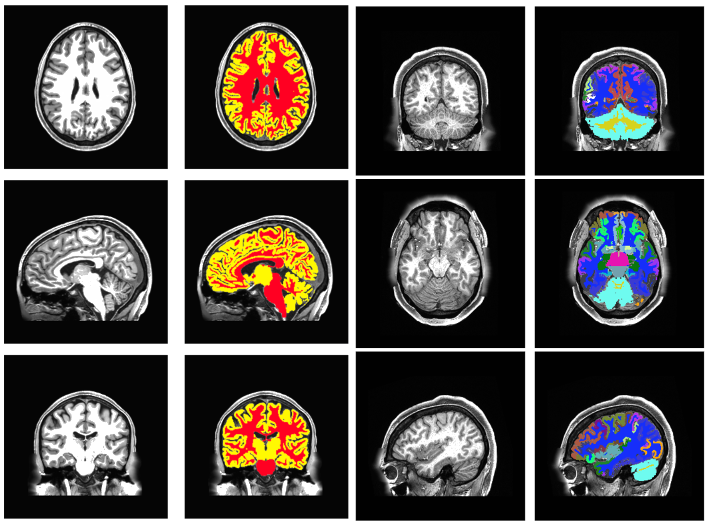
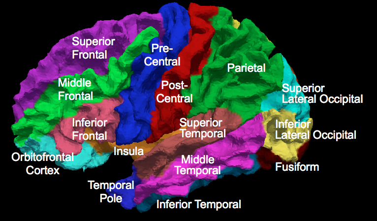
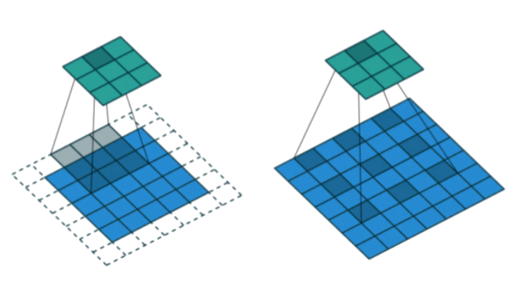
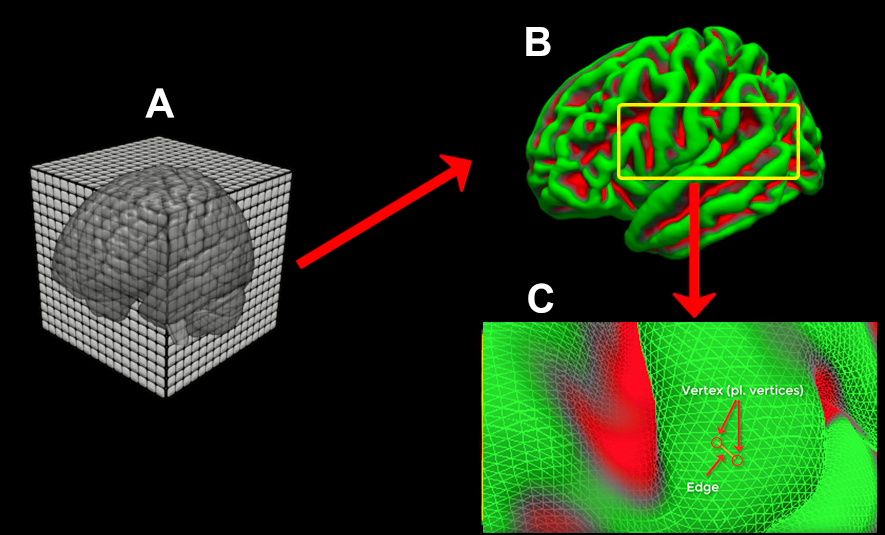
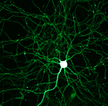
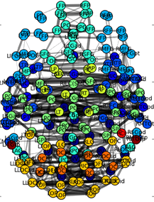
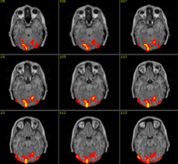

Machine Learning & Brain Imaging
Sergey Plis, PhD
Associate Professor, CS GSU


Outline
- Administration
- Model Interpretability
- Semantic segmentation
- Causal learning
- Decentralized learning
Administration
Syllabus (example)
What motivates our work
Premise: Brain dynamics are highly complex and yet hold the key to understanding brain function and dysfunction.
Goal: Develop models that can learn from high-dimensional dynamical data while maintaining stable, ecologically valid interpretations.
Learn from data how the brain works and breaks
The field's solution is to collect more data

Problem: large high dimensional data is not easy to understand
Desired Solution

automatically extract meaning from data
Model Interpretability
brain is highly dynamic

To Understand, Learn to Predict


Mahfuz Rahman

Usman Mahmood
How to train predictive models
when there isn't enough data


Zafar Iqbal
when there isn't enough data
Train via fMRI time reversal

Two types of eXplainable AI
Explain the data

Interpret the model

Mahfuz Rahman
explaining the data across lifespan

explaining the data across lifespan

Creating an interpretable model
capturing dynamics of the brain network

Problems with windowing
- Limiting data for estimation noisier estimates

- Fixed-shape soft windows: unclear what is important

- The same window shape for each time point
- The same window regardless the downstream task
-
Our solution: learn an adaptive window function
Usman Mahmood
Graph as a glass-box layer
- To see through a black box model we need a window

- Our window is a graph, but we want the model to use it too

- For that, the graph needs to be differentiable \[ \softmax(\bm{H}\bm{W}_Q\bm{W}_K\bm{H}^T), \bm{H}\mbox{ is (brain regions)} \times d \]
-
The now familiar
alignment matrix from the self-attention module
Interpretable glass-box layer: OASIS-3


glass-box layer boosts predictive power


Debbratha Saha
Gaining insight about populations (w/ privacy)

Semantic segmentation
the task
state of the art: freesurfer
deep learning standard: U-net

deep learning standard: U-net


Alex Fedorov
our model: Meshnet

- Gray and White matter
- FreeSurfer for ground truth
- T1 MRIs from HCP
- GitHub
https://github.com/Entodi/MeshNet
Meshnet

- 72516 vs. 23523355
- 600kb vs. 2Gb
an easy segmentation model
- compact and portable
- universal and adaptable
- code: https://github.com/Entodi/MeshNet
- It runs in browser!!!: brainchop.org
Mahfuz Rahman

Farfalla Hu
Will Ashbee
Surface generation (WIP)
Causal learning

Multimodal Causal Learning?

are they even compatible!?

the situation
Causal timescale $\ne$ Measurement timescale

$\approx100ms$
$\approx100ms$

$???$
$???$

$\approx2s$
$\approx2s$
What causal inferences can be made in this situation?
two challenges
- Forwards inference: Given a causal structure at causal timescale, what is the implied structure at (undersampled) measurement timescale?
- Backwards inference: Given inferred causal structure at measurement timescale (with unknown undersampling), what structures at causal timescale are possible?
Forward problem
representation
- Dynamic Bayesian Network (DBN)
- causally sufficient
- first order Markov
- no isochronal edges

undersampling effect

(better) representation

undersample

simple loops

specific behavior: DAG


Specific behavior: Superclique SCC

Specific behavior: Oscillating SCC

known undersampling rate
Virtual nodes

Conflict persistence
conflicts persist
${\cal{G}}^1 \text{ conflicts with } {\cal{H}}^u
\implies \forall {\cal G} \supseteq {\cal G}^1
\: {\cal{G}} \text{ conflicts
with } {\cal{H}}^u$
Search Tree

Unfortunately it is slow

computational complexity
- $\{ m_1 , \dots , m_l \}$ - the sets of virtual node identifications for each of the edges or edge-pairs
- $\prod_i^{l} \text{len}(m_i)$ - computational complexity of using edge-pairs
- $\text{len}$ - the number of possible identifications for that particular edge or edge-pair
- Computational advantage, expressed as a log-ratio: $$ \log{r} = \sum_i^{l} \log{\text{len}(m_i)} - e\log{n}. $$

still not fast enough
- pre-computed $O(n^2)$ pruning data-structure
- employed additional constraints and observations

6-node graphs

unknown undersampling rate
If ${\cal G}^{1} \subseteq {\cal{J}}^1$, then $\forall
u [ {\cal G}^{u} \subseteq {\cal{J}}^u]$.
If ${\cal G}^{u} \nsubseteq {\cal H}$, then $\forall
{\bf E} [ ( {\cal G}^{1}_{\bf E} )^u \nsubseteq {\cal
H} ]$
If
$\forall u [ {\cal G}^{u} \nsubseteq {\cal H} ]$,
then $\forall {\bf E}, u [ ( {\cal G}^{1}_{\bf E}
)^u \nsubseteq {\cal H} ]$
Answer Set Programming
https://gitlab.com/undersampling/gunfolds
collaborate
eat the cake and have it too
with (statistical) guarantees
Data sharing
what does it improve
- effective sample size
- diversity
- generalization
Data sharing
what does it not
- problems of motivation
- ethical and legal issues
- protecting the trust
- technical or administrative issues
$\epsilon$-differential privacy
- property of an algorithm
- applied to functions of the data
- quantifies risk
- bounds likelihood of re-inference
- adds noise
an example
Distributed private classifier

Decentralized algorithm development
- A. D. Sarwate et al., "Sharing privacy-sensitive access to neuroimaging and genetics data: a review and preliminary validation," Front Neuroinform, vol. 8, p. 35, 2014.
- Xie L, Plis S, Sarwate AD. Data-weighted ensemble learning for privacy-preserving distributed learning. In2016 IEEE International Conference on Acoustics, Speech and Signal Processing (ICASSP) 2016 Mar 20 (pp. 2309-2313). IEEE.
Decentralized ICA

The tool

Decentralized algorithm development
- (Ridge) Regression, closed form regression (freesurfer/VBM/etc)
- S. Plis et al, "COINSTAC: A privacy enabled model and prototype for leveraging and processing decentralized brain imaging data," Frontiers in Neuroinformatics, 2016.
- Independent vector analysis (dIVA)
- Nikolas Wojtalewicz, Rogers Silva, Vince D. Calhoun, Anand D. Sarwate, Sergey Plis, "Decentralized Independent Vector Analysis" ICASSP 2017
- Neural network (ICA/deep learning)
- Noah Lewis, Sergey Plis and Vince Calhoun, "Cooperative Learning: Decentralized Data Neural Network" IJCNN 2017.
- Decentralized stochastic neighbor embedding (dSNE)
- D. Saha et al, "See without looking: joint visualization of sensitive multi-site datasets," in International Joint Conference on Artificial Intelligence Melbourne, Australia, 2017.
- Joint independent component analysis
- B. Baker et al, "Large scale collaboration with autonomy: decentralized data ICA," in IEEE Machine Learning for Signal Processing Workshop, Boston, MA, 2015.
- Group ICA/dynamic FNC
- H. Gazula, B. Baker, E. Damaraju, S. M. Plis, S. Panta, R. Silva, and V. D. Calhoun, "Decentralized Analysis of Brain Imaging Data: Voxel-based Morphometry and Dynamic Functional Network Connectivity," Frontiers in Neuroinformatics, in press
- Support vector machine
- A. D. Sarwate et al., "Sharing privacy-sensitive access to neuroimaging and genetics data: a review and preliminary validation," Front Neuroinform, vol. 8, p. 35, 2014.
Team that's working on this

Take Home Points
- Understanding brain can help us build AI and help us
- We need deep learning for pattern recognition
- We need causal learning to learn meaning
- We need data for all of this
Thank you!